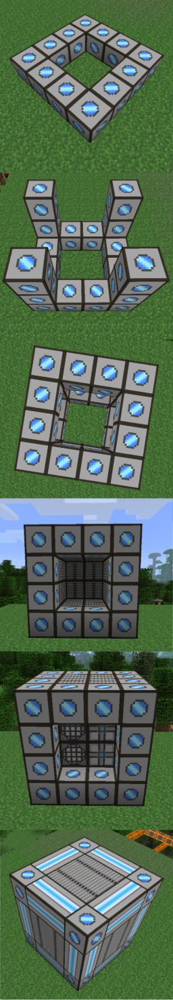

ME Crafting

Getting started with auto crafting isn't that difficult, to begin you need at least a working ME Network.
Building the ME Molecular Assembler Chamber.
The Chamber is comprised of the following blocks:
|
|
|
|
This structure can be built in any cuboid, or size as long as the following Criteria are met.
- All Corners, must be ME Assembler Containment Wall
- All Non Corner Sides must be ME Heat Vent
- All Inside blocks must be either ME Pattern Provider or ME Crafting CPU, no air or other blocks.
- There must be at least 1 ME Pattern Provider
Configuring Your Assembler Chamber
The next step is to craft yourself a ME Pattern Encoder, and some ME Blank Pattern's. You use the ME Pattern Encoder with the ME Blank Pattern and other ingredients to write your crafting patterns onto the ME Blank Pattern, this will create ME Encoded Pattern.
ME then uses these ME Encoded Pattern in the Assembler Chamber ( where you put your encoded patterns. ) If a Pattern appears as red inside the Assembly Chamber, it means that the system cannot identify the pattern as a valid supported crafting table recipe.
Crafting Items
Once you have an Encoded Pattern in your Assembler Chamber on your ME Network, even if you run out of that item, it will still show up in the terminal, but it will have the word "Craft" where the number usually is. Just click on a craft item, then enter how many you want, and hit "Begin" the system will start using any resources it has available to it to craft your request.
If you do not have the required items, it will continue to wait for ingredients until it has the materials to craft with, or until you cancel the crafting job. You can do this with an ME Crafting Monitor, which can check status on required or missing materials for a current job, or cancel it. If you don't have a ME Crafting Monitor, you can cancel crafting operations by causing the ME Controller to reboot by adding or breaking an ME Block in the ME Network.
This works great for regular crafting patterns, but doesn't help if you need to furnace or use another mod's crafting block, that's where external processing comes in.
Crafting Using External Processing
The ME Interface not only allows inputs, but also outputs for crafting, by putting a ME Encoded Pattern into the ME Interface's processing slots, you will see these as crafting options as well.
But how does it work? If you have BC pipes connected to the ME Interface with your ME Encoded Pattern, or if the ME Interface touches an inventory such as the top of a furnace ( lower priority than pipes. ) it will send items into the pipe/inventory. I bet you're thinking that that sounds crazy, because there's no "Crafting Pattern" for sand -> glass and other similar processing? Well that doesn't matter, you can encode anything you want in a ME Blank Pattern, even if its not even possible! But remember that if you put in impossible recipes your stuff may not work... Also, pay careful attention to the number of items required and exported. most ores give two dusts when ground up for instance, but some give more or less like Glowstone Dust or Certus Quartz Dust.
On to last problem, once it gets sent into the furnace you need to get it out, you can use BC pipes or RP2 Tubes to pull it out and sent it into an ME Interface, or use an ME Import Bus to pull the items directly back into the network. Whatever your choice is, remember to consider the time it takes for items to travel in pipes or get pulled from the machines, as well as how fast the machines themselves are.
| Page last modified on 07/16/2013 03:45 PM CDT By AlgorithmX2 |